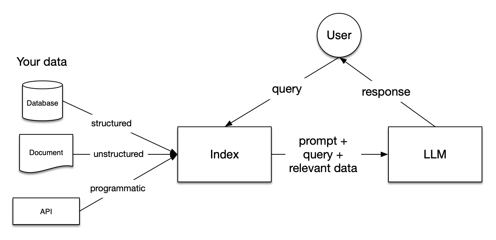

Homework 3: LLM agents & LLM interpretability#
The third homework zooms in on the following skills: implementing an advanced generation system, diving into task-specific RL fine-tuning hands-on and critically thinking about fine-tuning of LMs.
Logistics#
submission deadline: June 24th th 23:59 German time via Moodle
please upload a SINGLE .IPYNB FILE named Surname_FirstName_HW3.ipynb containing your solutions of the homework.
please solve and submit the homework individually!
if you use Colab, to speed up the execution of the code on Colab, you can use the available GPU (if Colab resources allow). For that, before executing your code, navigate to Runtime > Change runtime type > GPU > Save.
Exercise 1: Building a retrieval-augmented generation system (30 points)#
An increasingly popular approach to language generation is so called retrieval-augmented generation (RAG) wherein a language model is supplied with additional (textual) information retrieved from some storage, in addition to the actual task query. It has been found that this additional context improves model performance, and, e.g., allows to use LLMs with custom information (e.g., proprietary documents etc).
The general set up of a RAG system is as follows:
Some form of a database (DB) with (searchable) relevant background information (e.g., a database, a set of documents, …) is created.
A common database format are vector DBs, or, vectore stores. You can optionally learn more about vector DBs, e.g., here: https://www.pinecone.io/learn/vector-database/. The important conceptual point is that some form of a searchable database with relevant (textual) information is created.
An LLM that will be generating the responses to the queries, given context, is chosen.
An embedding model is chosen.
Task queries (e.g., questions or instructions) are provided to the system.
The query is converted to an embedding (using the model chosen ins tep 3), and the embedding is used to search and retrieve relevant information from the database. The specific retrieval method depnds on the nature of the database.
The relevant information is supplied to the LLM as context.
Given the extended context, the LLM provides output.
This is visualized in the figure below.

The image is sourced from here.
For more details on RAG, you can read the first part of this blog post (until “important concepts within each step”). Here is an optional paper about RAG, in case you want to learn more.
YOUR TASK
Your task in this exercise is to explore RAG by implementing a RAG system for recipe generation. The implemented RAG system should be compared to the performance of the same model in a “vanilla” set-up where the model solves the task directly.
We will use the package
LlamaIndexand the LLMmicrosoft/Phi-4-mini-instructmodel as the backbone for the implementation. We will use theBAAI/bge-small-en-v1.5model as our embedding model.We will use unstructured data in the form of a recipe dataset
m3hrdadfi/recipe_nlg_lite. This dataset will be indexed and it will be used to supplement information for the LLM, additionally to the query. The train split of the dataset should be used for the index, and a sample from the test dataset will be used for sampling queries with which the system will be tested.For this task, please complete the following steps:
Download the dataset from Huggingface.
Briefly familiarize yourself with the dataset.
Briefly familiarize yourself with this LLamaIndex example RAG system.
Complete the code below (in place of “### YOUR CODE HERE ####”), following the instructions in the comments to build a working RAG system that will generate recipes. Note that you will have to work with the LlamaIndex documentation to complete and understand the code. Some links are already provided.
Answer the questions at the end of the exercise.
# uncomment and run in your environment / on Colab, if you haven't installed these packages yet
# !pip install llama-index-embeddings-huggingface
# !pip install llama-index-llms-huggingface
# !pip install sentence-transformers
# !pip install datasets
# !pip install llama-index
# !pip install "huggingface_hub[inference]"
# !pip install accelerate bitsandbytes
# !pip install --upgrade datasets
# from IPython.display import clear_output
# clear_output()
# import packages
from datasets import load_dataset
import os
import pandas as pd
from llama_index.core import VectorStoreIndex, Settings, Document
# from llama_index.embeddings.ollama import OllamaEmbedding
from llama_index.embeddings.huggingface import HuggingFaceEmbedding
from llama_index.llms.huggingface import HuggingFaceLLM
from transformers import AutoTokenizer
import torch
# load dataset from HF
dataset = load_dataset("m3hrdadfi/recipe_nlg_lite")
# convert train split to pandas dataframe
dataset_df = pd.DataFrame(dataset["train"])
# explore
dataset_df.head()
# 1. In order to construct a VectorStorageIndex with the texts from the train dataset split, we need to
# create list of formatted texts.
# We want to construct texts of the form: "Name of recipe \n\n ingredients \n\n steps"
texts = [
#### YOUR CODE HERE #####
]
texts[:2]
# 2. We construct single Documents from the texts
# these documents will be used to construct the vector database
documents = [Document(text=t) for t in texts]
documents
# 3. We prepare some utility functions which are required for the LLM to generate maximally accurate responses
# this includes correctly formatting the query and the context into the prompt and special tokens
# that are expected by the chosen LLM backbone.
# we format the texts into the Phi-4 prompt format
# See https://huggingface.co/microsoft/Phi-4-mini-instruct
# to heck here how the prompt should look like!
def completion_to_prompt(completion):
return ### YOUR CODE HERE ###
In the next cell, the RAG building blocks are put together. Your task is to find out what the different configurations mean and correctly complete the code.
# 4. Save setting that are reused by our RAG system across queries
# you can learn more about the Settings object here: https://docs.llamaindex.ai/en/stable/module_guides/supporting_modules/settings/
# the embedding model is defined
Settings.embed_model = HuggingFaceEmbedding(
### YOUR CODE HERE ###
model_name=,
)
# backbone LLM is passed to the settings
# this is actually the model that is used to generate the response to the query, given retrieved info
# https://docs.llamaindex.ai/en/stable/understanding/using_llms/using_llms/
# and here: https://docs.llamaindex.ai/en/stable/module_guides/models/llms/usage_custom/
Settings.llm = HuggingFaceLLM(
### YOUR CODE HERE ###
model_name= ,
### YOUR CODE HERE ###
tokenizer_name= , #
#### YOUR CODE HERE ###
context_window=1024,
max_new_tokens=128,
generate_kwargs={"temperature": 0.7, "do_sample": True},
completion_to_prompt=completion_to_prompt,
device_map="auto",
model_kwargs={"torch_dtype": torch.float16, "load_in_8bit": True, "trust_remote_code": True},
)
print("Set LLM!")
# https://docs.llamaindex.ai/en/stable/module_guides/indexing/vector_store_index/
# we create a vector store from our documents
# here, we let the VectorStore convert the documents to nodes automatically
index = VectorStoreIndex.from_documents(
#### YOUR CODE HERE ###
)
print("Created index!")
Below is a single example for running a query with the RAG system, and inspecting various interesting aspects of the response generated by the model. Your task is, in the following, to set up a testing loop, which will test different queries with the RAG system and vanilla generation with the same LLM. Use the example as help. Provide comments explaning the single paramters for the following example, in place of “### YOUR COMMENT HERE ###”.
# https://docs.llamaindex.ai/en/stable/module_guides/deploying/query_engine/
# we define the query engine: generic interface that allows to ask questions over data
query_engine = index.as_query_engine(
### YOUR COMMENT HERE ###
response_mode="compact",
### YOUR COMMENT HERE ###
similarity_top_k=3,
verbose=True,
)
# https://docs.llamaindex.ai/en/stable/module_guides/querying/response_synthesizers/
response = query_engine.query("How do I make pork chop noodle soup?")
print(response)
for i, n in enumerate(response.source_nodes):
print(f"----- Node {i} -----")
print(n.node.get_content())
print("score")
print(n.score)
# testing loop
rag_responses = []
vanilla_responses = []
retrieved_node_texts = []
retrieved_node_scores = []
# retrieve 20 random dish names from test dataset to test the system on
test_df = pd.DataFrame(dataset["test"]).sample(20)
test_queries = [
f'How do I make {r["name"]}?' for
_, r in test_df.iterrows()
]
print(test_queries[:5])
for query in test_queries[:5]:
### YOUR CODE HERE ###
# run the query against the RAG system
response_rag =
rag_responses.append(str(response_rag))
# record the texts of the nodes that were retrieved for this query
retrieved_node_texts.append(
[### YOUR CODE HERE ### ]
)
# record the scores of the texts of the retrieved nodes
retrieved_node_scores.append(
[### YOUR CODE HERE ###]
)
### YOUR CODE HERE ###
# implement the "vanilla" (i.e., straightforward) generation of the response to the same query with the backbone LLM
# Hint: check the intro-to-hf sheet for examples how to generate text with an LM
response_vanilla =
vanilla_responses.append(response_vanilla)
retrieved_node_scores
test_queries[:5]
Questions:
Inspect the results of the testing. (a) How often do you prefer the RAG response over the vanilla response? (b) Do you observe differences between the RAG and vanilla responses? If yes, what are these? (c) Inpsect the retrieved documents and their scores. Do they make sense for the queries? Do the scores match your intuition about their relevance for the query?
What could be advantages and disadvantages of using RAG? Name 1 each.
What is the difference between documents and nodes in the RAG system?
What does the embedding model do? What is the measure that underlies retrieval of relevant documents?
What are different response modes of the query engine? Is the chosen mode a good choice for our application? Why (not)?
Exercise 2: Probing LLMs’ grammatical knowledge (15 points)#
In this task, you will conduct a probing experiment to investigate whether EleutherAI/pythia-160m has learned the notion of subject-verb agreement. That is, we want to probe whether the model’s representations encode if a sentence is grammatical (e.g., The keys to the kabinet are on the table) or ungrammatical (e.g., The keys to the kabinet is on the table).
To this end, we want to train a probing classifier on the hidden representations of the sentence and then test it on some test sentences. Furthermore, we want to compare whether the grammatical information is represented more reliably in the last layer of the model, compared to the third layer of the model.
YOUR TASK
Your task in this exercise is to finish implementing the probing experiment, train and evaluate the classifier, and answer the questions at the end of the exercise. We will use data from one split of the BLiMP benchmark which contains examples of grammatical and ungrammatical sentences.
For this task, please complete the following steps:
Download the dataset from Huggingface.
Briefly familiarize yourself with the dataset.
Complete the code and the comments below (in place of “### YOUR CODE / COMMENT HERE ####”), following the instructions in the comments.
Answer the questions at the end of the exercise.
# NOTE: there might be some dependency version incompatibilities, but feel free to ignore them
# !pip install -U datasets huggingface_hub fsspec
from transformers import AutoModelForCausalLM, AutoTokenizer
import numpy as np
from datasets import load_dataset, concatenate_datasets
import torch
if torch.cuda.is_available():
device = torch.device('cuda')
elif torch.backends.mps.is_available():
device = torch.device("mps")
else:
device = torch.device('cpu')
def get_model_and_tokenizer(model_name, device, random_weights=False):
model = AutoModelForCausalLM.from_pretrained(model_name, output_hidden_states=True).to(device)
tokenizer = AutoTokenizer.from_pretrained(model_name)
emb_dim = model.config.hidden_size
if random_weights:
print('Randomizing weights')
model.init_weights()
return model, tokenizer, emb_dim
def melt_good(example, idx):
return {"id": example["pair_id"], "label": "1", "sentence": example["sentence_good"], "idx": idx}
def melt_bad(example, idx):
return ### YOUR CODE HERE ###
def get_data():
# Load the dataset
dataset = load_dataset("nyu-mll/blimp", "regular_plural_subject_verb_agreement_1")
train_data = dataset['train']
# transform the data to a long format where the "bad" and "good" are labels,
# and sentences are all in one sentence column
good = train_data.map(melt_good, with_indices=True)
bad = train_data.map(melt_bad, with_indices=True)
train_data = concatenate_datasets([good, bad])
# Split train into train and test data, 0.8 for train and 0.2 for test
train_test_data = ### YOUR CODE HERE ###
print(train_test_data)
return train_test_data['train'], train_test_data['test']
class Classifier(torch.nn.Module):
def __init__(self, input_dim, output_dim):
"""
Initialize a linear classifier.
"""
super(Classifier, self).__init__()
### YOUR CODE HERE ###
def forward(self, input):
output = ### YOUR CODE HERE ###
return output
def build_classifier(emb_dim, num_labels, device='cpu'):
classifier = Classifier(emb_dim, num_labels).to(device)
criterion = torch.nn.CrossEntropyLoss().to(device)
optimizer = torch.optim.Adam(classifier.parameters())
return classifier, criterion, optimizer
# load the data
train_data, test_data = get_data()
print("Training sentences:", len(train_data))
# set up the classifier
model_name = "EleutherAI/pythia-160m"
# get model and tokenizer from Transformers
model, tokenizer, emb_dim = get_model_and_tokenizer(model_name, device)
# COMMENT the args
def train(
num_epochs,
train_representations,
train_labels,
classifier,
criterion,
optimizer,
batch_size=32
):
num_total = len(train_representations)
print("Num total: ", num_total)
for i in range(num_epochs):
total_loss = 0.
num_correct = 0.
for batch in range(0, num_total, batch_size):
# get the batch of representations and labels
### YOUR CODE HERE ###
batch_repr = torch.stack(train_representations[batch: batch+batch_size])
batch_labels = torch.stack(train_labels[batch: batch+batch_size])
# call the training step:
# passing the batch through the classifier
# computing the loss
# backpropagating the loss and updating the weights
### YOUR CODE HERE ###
optimizer.zero_grad()
out = classifier(batch_repr)
pred = out.argmax(dim=1)
loss = criterion(out, batch_labels)
loss.backward()
optimizer.step()
# accumulate the loss and number of correct predictions for tracking
num_correct += pred.long().eq(batch_labels.long()).cpu().sum().item()
total_loss += loss.item()
print('Training epoch: {}, loss: {}, accuracy: {}'.format(i, total_loss/num_total, num_correct/num_total))
return total_loss/num_total, num_correct/num_total
def evaluate(
test_representations,
test_labels,
classifier,
criterion,
batch_size=32
):
num_correct = 0.
num_total = len(test_representations)
total_loss = 0.
with torch.no_grad():
for batch in range(0, num_total, batch_size):
# retrieve the batch of test representations and labels
### YOUR CODE HERE ###
out = classifier(batch_repr)
pred = out.argmax(dim=1)
num_correct += pred.long().eq(batch_labels.long()).cpu().sum().item()
total_loss += criterion(out, batch_labels)
print('Testing loss: {}, accuracy: {}'.format(total_loss/num_total, num_correct/num_total))
return total_loss/num_total, num_correct/num_total
# this follows the HuggingFace API for pytorch-transformers
def get_sentence_repr(sentence, model, tokenizer, model_name, device):
"""
Get representations for one sentence
"""
with torch.no_grad():
ids = tokenizer.encode(sentence)
input_ids = torch.tensor([ids]).to(device)
# retrieve the hidden states from forward call: list of torch.FloatTensor of shape (batch_size, sequence_length, hidden_size) (hidden_states at output of each layer plus initial embedding outputs)
all_hidden_states = ### YOUR CODE HERE ###
print(all_hidden_states)
# convert to format required for eval: numpy array of shape (num_layers, sequence_length, representation_dim)
all_hidden_states = [hidden_states[0].cpu().numpy() for hidden_states in all_hidden_states]
all_hidden_states = np.array(all_hidden_states)
return all_hidden_states
# top-level list: sentences, second-level lists: layers, third-level tensors of num_words x representation_dim
train_sentence_representations = [get_sentence_repr(sentence, model, tokenizer, model_name, device)
for sentence in train_data['sentence']]
test_sentence_representations = [get_sentence_repr(sentence, model, tokenizer, model_name, device)
for sentence in test_data['sentence']]
# top-level list: layers, second-level lists: sentences
train_sentence_representations = [list(l) for l in zip(*train_sentence_representations)]
test_sentence_representations = [list(l) for l in zip(*test_sentence_representations)]
# overage over all word represenations within a sentence (num layers, words * sentences, hidden size)
train_representations_all = [[torch.tensor(np.mean(word_representations, 0)).to(device) for word_representations in train_layer_representations] for train_layer_representations in train_sentence_representations]
test_representations_all = [[torch.tensor(np.mean(word_representations, 0)).to(device) for word_representations in test_layer_representations] for test_layer_representations in test_sentence_representations]
# concatenate all labels
train_labels = train_data['label']
train_labels_all = [torch.tensor(int(x)).type(torch.LongTensor).to(device) for x in train_labels]
test_labels = test_data['label']
test_labels_all = [torch.tensor(int(x)).type(torch.LongTensor).to(device) for x in test_labels]
# build classifier
classifier, criterion, optimizer = build_classifier(emb_dim, num_labels=2, device=device)
# Take final layer representations
train_representations_final = train_representations_all[-1]
test_representations_final = test_representations_all[-1]
# Take third layer representations (first in the list are embedding results)
train_representations_third = train_representations_all[3]
test_representations_third = test_representations_all[3]
# train the model for 100 epochs
train_loss, train_accuracy = ### YOUR CODE HERE ###
# test
test_loss, test_accuracy = evaluate(test_representations_final, test_labels_all,
model, tokenizer, model_name, device,
classifier, criterion)
print("Train accuracy: {}, Test accuracy: {}".format(train_accuracy, test_accuracy))
# train and test on third layer representations
classifier_third, criterion, optimizer = build_classifier(emb_dim, num_labels=2, device=device)
train_loss, train_accuracy = ### YOUR CODE HERE ###
# test
test_loss, test_accuracy = evaluate(test_representations_third, test_labels_all,
model, tokenizer, model_name, device,
classifier_third, criterion)
print("Train accuracy: {}, Test accuracy: {}".format(train_accuracy, test_accuracy))
Answer the following questions:
Was the information about grammatical agreement encoded more robustly in the third or the last layers’ representations? How can you tell?
What potential complication for interpreting the probing results could there be if the classifier were a more powerful model (e.g., a neural net)?
Exercise 3: Surfacing of relevant predictions over layers in different domains and prompting (10 points)#
In this exercise, your task is to compare how ‘sensible’ predictions surface in the model as the input is passed through the layers. To this end, your task is to apply the logit lens with nnsight for EleutherAI/pythia-410m, and look at the top tokens that surface as the forward pass is calculated for the sequences.
YOUR TASK
Please implement the early decoding pipeline and visualize the results for passing the following four prompts through the model:
a. “The currency in the United States of America is dollar.”
b. “The result of two plus two is four.”
c. A prompt that includes a 3-shot example before the prompt a (you should come up with the prompt yourself).
d. A prompt that includes a 3-shot example before the prompt b (you should come up with the prompt yourself).
Answer the folowing questions (please write 3 sentences each max.):
Are there differences in how predictions surface for the math vs. commonsense task?
Are there differences in the predictions for few-shot prompting vs. zero-shot prompting?
# !pip install nnsight
from IPython.display import clear_output
from nnsight import LanguageModel
from typing import List, Callable
import torch
import numpy as np
from IPython.display import clear_output
from transformers import AutoModelForCausalLM, AutoTokenizer
# Use the pythia model
model = LanguageModel("EleutherAI/pythia-410m", device_map="auto", dispatch=True)
model
prompt= ### YOUR CODE HERE ###
layers = ### YOUR CODE HERE ###
probs_layers = []
with model.trace() as tracer:
with tracer.invoke(prompt) as invoker:
for layer_idx, layer in enumerate(layers):
# Process layer output through the model's head and layer normalization
layer_output = model.embed_out(model.gpt_neox.final_layer_norm(layer.output[0]))
# Apply softmax to obtain probabilities and save the result
probs = torch.nn.functional.softmax(layer_output, dim=-1).save()
probs_layers.append(probs)
probs = torch.cat([probs.value for probs in probs_layers])
# Find the maximum probability and corresponding tokens for each position
max_probs, tokens = probs.max(dim=-1)
# Decode token IDs to words for each layer
words = [[model.tokenizer.decode(t.cpu()).encode("unicode_escape").decode() for t in layer_tokens]
for layer_tokens in tokens]
# Access the 'input_ids' attribute of the invoker object to get the input words
input_words = [model.tokenizer.decode(t) for t in invoker.inputs[0][0]["input_ids"][0]]
import plotly.express as px
import plotly.io as pio
pio.renderers.default = "colab"
fig = px.imshow(
max_probs.detach().cpu().numpy(),
x=input_words,
y=list(range(len(words))),
color_continuous_scale=px.colors.diverging.RdYlBu_r,
color_continuous_midpoint=0.50,
text_auto=True,
labels=dict(x="Input Tokens", y="Layers", color="Probability")
)
fig.update_layout(
title='Logit Lens Visualization',
xaxis_tickangle=0
)
fig.update_traces(text=words, texttemplate="%{text}")
fig.show()
### YOUR CODE HERE FOR LOOKING AT OTHER PROMPT RESULTS ###